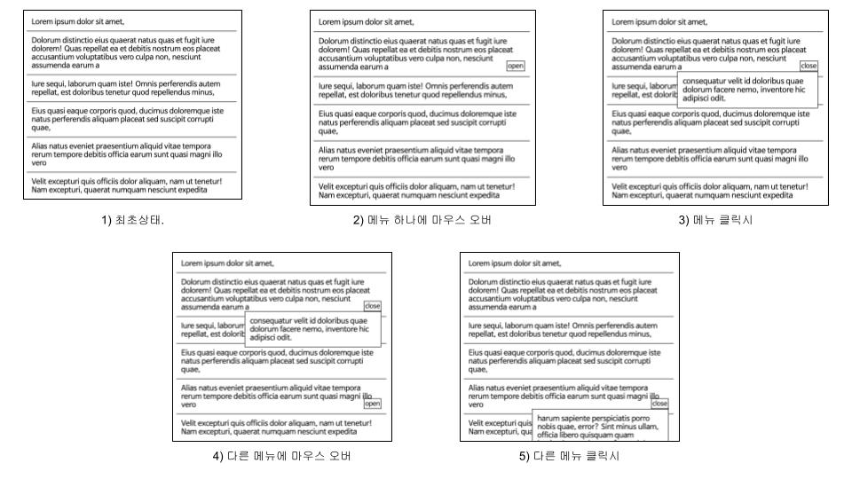

Q. 버튼을 클릭하면 컨텍스트 메뉴가 나타나고, 메뉴를 선택하거나 그 외의 부분을 클릭하면 사라지는 팝오버 컴포넌트를 구현하세요

q1. 문제 상황에 대하여 Java Script로 동작을 구현시킬 수 있는 코드를 작성해보세요
q2. 문제 상황에 대하여 jquery로 동작을 구현시킬 수 있는 코드를 작성해보세요
q3. 문제 상황에 대하여 HTML(detail 태그)로 동작을 구현시킬 수 있는 코드를 작성해보세요
q4. 문제 상황에 대하여 React로 동작을 구현시킬 수 있는 코드를 작성해보세요
q5. 문제 상황에 대하여 React-CreatePortal 기능으로 동작을 구현시킬 수 있는 코드를 작성해보세요
q1
./question/q1_js/index.js
./question/q1_js/style.css
q2
./question/q2_jquery/index.js
./question/q2_jquery/style.css
q3
./question/q3_html-js/index.js
./question/q3_html-js/style.css
q4 ./question/q4_react.js/src/App.js
q5
./question/q5_react.js-createportal/src/App.js
q1
경로
./question/q1_js
터미널
$ npm install
$ npm start
q2
경로
./question/q2_jquery
터미널
$ npm install
$ npm start
q3
경로
./question/q3_html-js
터미널
$ npm install
$ npm start
q4
경로
./question/q4_react.js
터미널
$ npm install
$ npm start
q5
경로
./question/q5_react.js-createportal
터미널
$ npm install
$ npm start